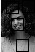

Computer Vision
Assignment 2
____________________________________________________
Face Detection
__________
March 5, 2015
1 Source Code
There are three components to the code.
- gaussianFace.py - Implementation of a face detector using a Gaussian distribution to model the distribution of face and non face patches.
- linearClassifier.py - Implementation of a face detector using a linear classifier trained using logistic regression.
- ImgFunctions2.py - Collection of functions used by both algorithms.
2 Constructing the Training Set
The images used in the training set are from Test Set A collected at CMU by Henry A. Rowley, Shumeet Baluja, and Takeo Kanade. I used a python script to automate the extraction of face patches from the images based on the coordinates provided here. My first approach was simply to take the rectangle formed by the eyes and mouth. This produced a problem when scaling the images down to 12x12 because the patches were often not square to begin with and scaling them to a square shape often made them unrecognizable as faces. To fix this I took the maximum side length of the rectangle and formed a square with that side length. This approach seemed to work but I was interested in how results would change as a result of using a less tight crop. I began by adding a fixed number of pixels to the side length of the square but because the resolution of the images varied significantly this wan't consistently successful. Instead I introduced a parameter to scale the side length of the square and then shifted it to ensure it stayed centered on the face. The collage below shows images with a scaling factor of XXX.
To select the nonface patches I randomly selected 12x12 patches from the training images and checked that they didn't intersect with any of the face coordinates provided on the CMU website. One drawback of this is that often I would end up with multiple patches that were almost identical in content. This could potentially be improved by calculating some metric that scores similarity of two patches and making sure that no two patches are too close or by increasing the size of the training set. I selected 12x12 patches directly but it would be interesting to see if selecting patches that are on the same scale as the faces in the image and then scaling them down would have an effect on output.
3 Gaussian Distribution
3.1 Parameters
- filename - Name of the file to be checked for faces.
- tau - Threshold to use for singular values.
3.2 Output
The program creates four image files. The first is 'binary.jpg' which displays rectangles in the areas that faces are detected. The second image is 'outline.jpg' which displays the original image with the 12x12 patches which were determined to be faces outlined. The last two are titled 'faceMean.jpg' and 'nofaceMean.jpg' and are the sample means calculated for each class.
3.3 Discussion
I encountered a number of problems while implementing the gaussian face detector. These included determining an appropriate value for tau and determining at what point values should be scaled, if at all. In particular, I found it difficult to understand and predict the impact that different values of tau would have on the output of the detector.
3.3.1 Sample Means
The below images are the sample means calculated from the training set for each patch class. Although I was concerned that some of the face patches were barely recognizable, these images reassured me that on average the patches provided an accurate approximation of a face.
3.3.2 Selecting Tau
My first step in identifying an appropriate tau was to plot the values and look for a 'knee' in the graph as suggested in class. Cropped versions of these graphs are shown below.
Specific Values
-

Face Class
-
Non-Face Class
These graphs were useful in determining an approximate range from which an appropriate tau might be selected but I didn't see an immediately obvious single value. For this reason I experimented with a number of values for tau in the range between 100 and 400. My intuition suggested that a lower value of tau would result in more detected faces and a higher value would result fewer detected faces. This did not always prove to be the case. For example, with the three images shown below.
Variation in Tau
-
tau = 100
-
tau = 115
-
tau = 120
Setting tau to be 115 produced the most correct positives and fewest false positives of the settings that I found. This was particularly surprising to me because the values of S for which tau acted as a threshold varied from ~1.1E-11 to 3.3E5. Variations in tau of only 5 or 10 often excluded only one or two values from S and yet resulted in fairly significant changes. Furthermore, while 115 was the best setting for this particular image, this was not always the case. After some experimentation it seems that tau can be interpreted as how tightly the classifier stuck to the training set. For very small values of tau for example I was able to achieve 100% accuracy over the training data but this resulted in very poor results on other images. This can be seen in the graph below. On the y-axis is accuracy.The x-axis plots the value of tau logarithmically. Thus the point marked -3 indicates the value of tau was 10^-3. The blue line shows accuracy over the training set and the green line shows accuracy over the additional testing set.
3.4 Results
The test set I downloaded to use in constructing my training data had almost 170 faces in it and only 100 were used for the training set itself. I had already written a script to extract the first 100 faces so I decided I would extract the remaining 68 to use as a way to test the accuracy of my classifier. Accuracy depended on the value of tau used but for a tau of 115 my classifier had 62.5% accuracy over the training set and 66.91% accuracy over the additional test set. This was surprising for a number of reasons. I had expected the accuracy on the training set to be much closer to 100% and in particular I expected it to be larger than the accuracy over the non training set. The second surprise was that by dividing the critical values by 100 instead of dividing the values of the covariance matrix by 100 I was able to increase accuracy significantly in both categories. This change resulted in 98.5% accuracy over the training set and 77.94% accuracy over the non training set. Yet overall this change seemed to produce worse results. A comparison is below.
Scaling
-
Scaling Sigma
-
Scaling Critical Values
3.4.1 Image # 1 - randtest.jpg
This image was specially constructed by inserting face patches from the training set into a randomly generated background in order to check that the detection algorithm was implemented correctly. The final result was acheived with tau=1.
-
Original Image
-
Tau = 200
-
Final Result
3.4.2 Image # 2 - kaaritest.jpg
This is a scaled down version of kaari1.gif from the CMU test set. This image was not used in the training set. The final result was achieved with tau=400.
-
Original Image
-
Tau = 200
-
Final Result
3.4.3 Image # 3 - judybatstest.jpg
This is a scaled down version of judybats.gif from the CMU test set. This image was not used in the training set. The final result was achieved with tau=170.
-
Original Image
-
Tau = 200
-
Final Result
4 Linear Classifier
4.1 Parameters
- filename - Name of the file to be checked for faces.
- learningRate - How quickly the weight vector is changed during training.
- iterations - Number of iterations to run the training portion of the classifier. I used 7000 for my results because this produced convergent accuracy for every learning rate that I tried.
4.2 Output
The program creates one image file, outline.png, which shows the original image with squares outlining the places where faces were detected.
4.3 Discussion
In some ways the linear classifier was simpler to implement than the gaussian distribution. Although the underlying math is eually complex the implementation involves less code and seemed more straightforward. It did present its own frustrations however. Although accuracy on the training set was higher than the gaussian detector there was no value comparable to tau that could be tweaked to improve results for a given result. This meant that results for a particular image were often unsatisfying.
4.3.1 Learning Rate
These are graphs showing how accuracy increases with the number of iterations of training. It's interesting to note that the learning rate had very little impact on the shape of the graph or how quickly accuracy reached 100%. It's also interesting to note the large spikes in decreased accuracy. I have no satisfying explanation for why these sudden decreases happen. Learning rates significantly smaller than these, say 0.0000001, displayed the same overall shapes but converged to accuracies below 100%.
Training Accuracy
-
Learning Rate = 0.1
-
Learning Rate = 0.5
-
Learning Rate = 0.9
4.4 Results
4.4.1 Image # 1 - randtest.jpg
This is the same image from the gaussian section.
-
Original Image
-

Final Result
4.4.2 Image # 2 - kaaritest.jpg
This is the same image from the gaussian section.
-
Original Image
-

Final Result
4.4.3 Image # 3 - judybatstest.jpg
This is the same image from the gaussian section.
-
Original Image
-
Final Result
5 Conclusion
The results generated by my implementations of the gaussian and linear regression based face detectors were heavily limited by the small size of the training set used. For the sample images presented here the gaussian detector performed on a level with the linear classifier based detector despite statistics suggesting that the opposite will be true in general. I believe this is partly a result of the fact that, because test images with the right resolution were fairly labor intensive to make, only a few images were compared. For a larger sample size I expect that the linear detector would have better performance on average. Additionally, the gaussian detector benefited from human input in the form a tweaking the tau parameter.
A potential improvement for the linear detector would be to attempt to account for the fact that the probability of a face occuring is not 50/50.
6 Sources:
The code used for displaying the images was taken from this website.